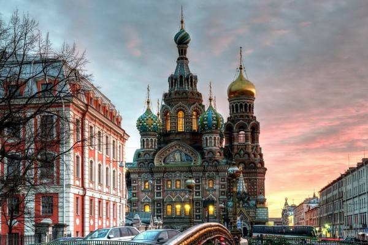
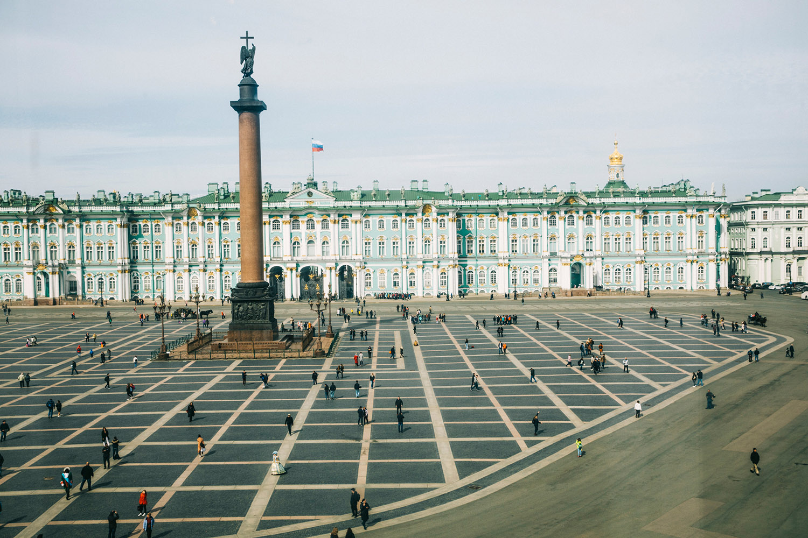
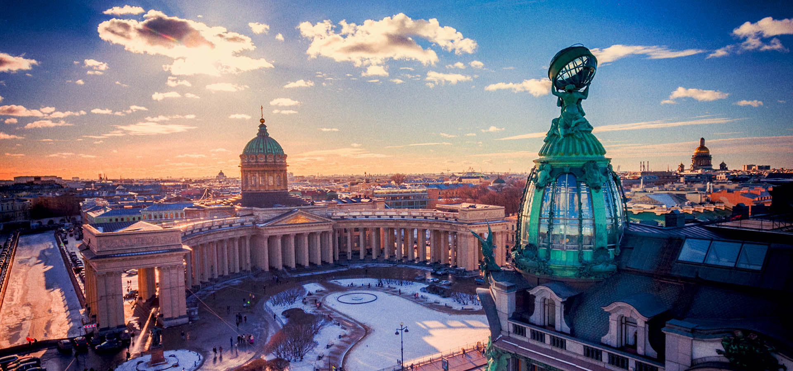

Высокоширотным положением города объясняется явление белых ночей. Белые ночи наступают 25-26 мая, когда солнце опускается за горизонт не более чем на 9°, и вечерние сумерки практически сливаются с утренними. Наибольшая продолжительность дня приходится на 21-22 июня (18 ч. 53 мин.); заканчиваются белые ночи 16-17 июля. Продолжительность белых ночей в общей сложности более 50 дней.
Климат в Санкт-Петербурге влажный, близкий к морскому, с умеренно теплым летом и довольно продолжительной умеренно холодной зимой. Средняя температура зимой -7,8°С, средняя температура летом +18°С. В сухую жаркую погоду температура воздуха может достигать +25°С...+30°С. Зимой может быть значительное похолодание: до -25°С...-30°С. Осадков выпадает 634 мм в год.
Главная водная артерия города - река Нева. Свое название она получила от озера Нево (так в древности называлось Ладожское озеро), из которого берет начало. Длина Невы - 74 км (в городе - 36 км), средняя ширина реки в черте города около 600 м, глубина - до 24 м. Нева – река со сложным характером, с очень быстрым течением. Среднегодовая температура воды составляет 5 градусов. Поверхность воды составляет десятую часть площади города.
В Санкт-Петербурге еще протекают 64 небольшие реки и находятся 48 каналов. Через них перекинуто 308 мостов (с учетом пригородных - мостов более 800). Среди них - 22 разводных. Общая длина всех мостов города - около 16 км, а набережных 170 километров.
Мосты Санкт-Питербурга
|  | Спас на Крови |
|  | Дворцовая площадь |
|  | Казанский собор |